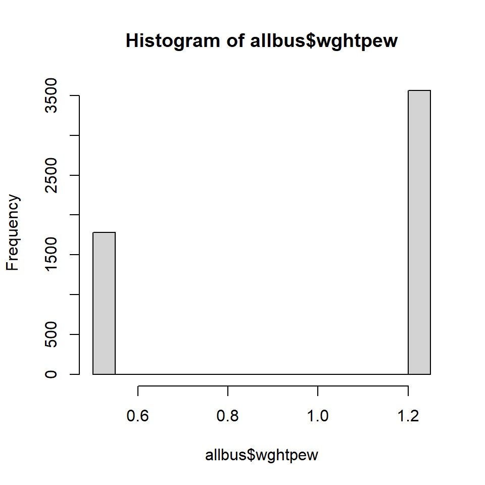

[1] "xs11" "xt01" "xt02" "xt03" "xt04" "xt05"
[7] "xt06" "xt12" "xt13" "xt14" "xt07" "xt08"
[13] "xt09" "xt10" "xt10c" "xs15" "xs16" "land"
[19] "bik" "gkpol" "wghtpew" "wghtht" "wghthew" "wghthtew"3. Wo finden wir Gewichte in bekannten Surveys?
Hallo und herzlich willkommen zum dritten Teil der Videoserie zum Thema “Gewichtung mit R”. Im vorigen Teil zwei haben wir darüber gesprochen, warum wir unsere Daten gewichten müssen.
Wenn die Daten aus komplexen Stichproben stammen, sollten wir zwingend Designgewichte nutzen um ungleiche Auswahlwahrscheinlichkeiten auszugleichen. Zusätzlich kann man mit Hilfe von Anpassungsgewichten Verzerrungen durch Nonresponse unter bestimmten Voraussetzungen abmildern.
Wie wir bereits in Video zwei gehört haben, gibt es praktische und forschungsökonomische Gründe dafür, dass keine einfache Zufallsstichprobe gezogen werden kann. Unter anderem kann man durch eine komplexe Stichprobe im Vergleich zu einer einfachen Zufallsstichprobe bei gleicher Fallzahl eine höhere Genauigkeit erreichen. Oder umgekehrt: bei einer definierten Qualität kann der Ressourceneinsatz durch eine komplexe Stichprobe reduziert werden.
Wenig überraschen nutzen große Umfrageprogramme wie der Allbus oder der European Social Survey (ESS) komplexe Stichprobendesigns, damit eine Befragung effizient möglich ist.
In diesem Video wollen wir uns nun anschauen, wie wir die notwendigen Informationen finden, die notwendig sind, um das Stichprobendesign korrekt zu berücksichtigen und die Gewichtung korrekt durchzuführen. Dafür nehmen wir uns die jüngsten Runden eben jener beiden bekannten sozialwissenschaftliche Umfragen vor: den Allbus 2021 und den European Social Survey der Runde 10.
Für beide Umfragen zeige ich Ihnen, wo sie die entsprechende Dokumentation finden, wo sie darin nach Informationen zu den Gewichten suchen und wo sie die Gewichte in den Datensätzen finden.
Am Ende des Videos sollten Sie in der Lage sein, auch selbst für andere Datensätze nach den entsprechenden Informationen suchen zu können und die korrekten Gewichte für Ihre Analysen identifizieren zu können.
Beginnen wir dem Allbus.
Der Allbus
Allbus steht für „Allgemeine Bevölkerungs¬umfrage der Sozial¬wissenschaften” und ist ein institutionalisiertes Umfrageprogramm, welches am GESIS – Leibniz-Institut für Sozialwissenschaften e.V. angesiedelt ist.
Seit 1980 werden in zweijährigem jeweils etwa 3.000 bis 3.500 Personen in persönlichen Interviews zu unterschiedlichen gesellschaftlichen und politischen Themen, sowie zur Soziodemographie befragt. Ein Teil der Fragen gehört zum Kernprogramm und ist somit auch als Zeitreihe auswertbar, andere Fragemodule wechseln. Insgesamt gibt es bisher 22 Runden. Die einzigen Abweichungen vom zweijährigen Rhythmus sind eine Umfrage 1991, die erstmals auch die Ostdeutsche Bevölkerung einbezogen hat, sowie der letzte Allbus 2021, der aufgrund der Corona-Pandemie erst mit einem Jahr Verspätung ins Feld ging. Mit über 5.300 Personen hat dieser Allbus auch untypisch viele Befragte, das liegt daran, dass coronabedingt erstmals zwei Erhebungsmodi parallel genutzt wurden, und zwar ein Online-Fragebogen und ein Selbstausfüller-Fragebogen.
Zu allen Allbus Umfragen gibt es den Datensatz und die Dokumentation zu den Daten beim GESIS - Leibniz Institut für Sozialwissenschaften.
Lassen sie uns mal gemeinsam schauen, was wir dort bekommen und dann insbesondere: wo es Informationen zur Gewichtung gibt…
Ich rufe die Webseite des GESIS auf gesis.org. Unter „Angebot” finde ich die Unterseite zum Allbus. Bei „Inhalte und Suche” gibt es zu allen Jahrgängen das Studienprofil.
Den Allbus 2021 finde ich hier oben.
Habe ich mich also zur Detailseite des Allbus 2021 vorgearbeitet, erhalte ich hier den Datensatz zum Download, ein paar Randdaten: Erhebungszeitraum, das durchführende Umfrageinstitut, die Datensatzstruktur. Und hier unten eine thematisch gegliederte Übersicht über die Themen. Wollen Sie aber den genauen Fragewortlaut, dann können Sie hie oben auch den Fragebogen herunterladen.
Weiter unten finden Sie noch Informationen zur Stichprobe und Grundgesamtheit – die Wohnbevölkerung über 18 Jahren. Die Stichprobe wird beschrieben als zweistufige, disproportional geschichtete Zufallsauswahl, in Westdeutschland (incl. West-Berlin) und Ostdeutschland (incl. Ost-Berlin).
Das ist aber etwas ungenau. Denn: die zwei Stufen beziehen sich nicht auf die disproportionale Schichtung. Die disproportionale Schichtung nach Ost/West mit Oversampling für Ost kommt nämlich als allererstes. Erst danach, innerhalb der beiden Unterstichproben, man könnte auch sagen, innerhalb der unabhängigen Stichproben für Ost und West, kommt dann die zweistufige Zufallsauswahl:
- Stufe 1 ist dabei eine Zufallsauswahl an Gemeinden, diese dienen als sogenannte Primary Sampling Units oder Sample Points.
- Und auf Stufe 2 werden dann innerhalb dieser Gemeinden die Personen aus dem Einwohnermelderegister gesampelt. Wie sie sehen, liegt also sogar eine Klumpenstichprobe vor: Zuerst werden die Gemeinden als Cluster ausgewählt und dann, innerhalb der Cluster die eigentlichfen Befragten. Weiter unten sehen wir auch die Verteilung dieser Cluster auf die Landesteile.
Weiter erfahren wir, dass die Gemeinden mit einer Wahrscheinlichkeit proportional zur Zahl ihrer erwachsenen Einwohner ausgewählt werden. Also: in dieser Stufe wird darauf geachtet, dass das Sampling einer Gemeinde nicht durch die Größe der Gemeinde für unterschiedliche Auswahlwahrscheinlichkeiten für die in ihr enthaltenen Personen sorgt.
Deutlicher wird das, wenn man als Gedankenbeispiel die Auswahlwahrscheinlichkeiten der Gemeinden nicht um die Zahl der Einwohner korrigiert. Wir Beispielsweise eine Großstadt mit gleicher Wahrscheinlichkeit wie ein kleines Dorf gesampelt, hätten die Dorfbewohner ja insgesamt eine deutlich höhere Auswahlwahrscheinlichkeit als die Stadtbewohner.
Was an dieser Stelle noch nicht erwähnt wird ist, dass auch diese erste Stufe der Auswahl der Gemeinden eine stratifizierte Stichprobe nutzt. Dabei werden das Bundesland, die Gemeindegrößenklasse und der Siedlungstyp über die BIK-Größenklassen als Schichtungsmerkmale herangezogen. Dieses Detail findet sich aber erst in der ausführlichen Dokumentation, die wir uns auch gleich noch anschauen. Dazu öffnen wir den Variablenreport, manchmal auch Codebuch genannt:
Eigentlich enthält das Codebuch eine Dokumentation aller im Datensatz enthaltenen Variablen. Ich springe mal direkt dorthin, wo diese Variablendokumentation anfängt. Ich scrolle noch ein paar Seiten weiter zu den ersten inhaltlichen Fragen. Und hier sehen wir für alle Variablen den gleichen Aufbau: Hier oben der Variablenname, dort eine Kurzbeschreibung, der Fragewortlaut, die Antwortvorgaben, sowie die zugeordneten Merkmalsausprägungen. Außerdem gibt es Informationen zu den Missing Values, und am Ende eine Häufigkeitstabelle.
Aber der Allbus Variablenreport bietet noch mehr. Und zwar am Anfang ein Studienbeschreibung mit einer Vorstellung der Themenblöcke und für uns am interessantesten in Kapitel 3 einen ganzen Abschnitt zur Gewichtung. Wenn Sie mit den Daten des Allbus arbeiten, sollten Sie sich diesen Abschnitt auch unbedingt einmal durchlesen. Das Wichtigste was ihr erfahren, fasse ich mal kurz zusammen:
- Es gibt ein Oversampling für Ost – das ist uns ja schon bekannt. Und damit wissen wir ja bereits, dass es ein Designgewicht geben muss, dass dieses Oversampling ausgleicht.
- Während der Allbus seit dem Jahr 2000 Personenstichproben nutzt, wurde früher das ADM-Stichprobendesign genutzt, bei dem auf Stufe 2 zunächst Haushalte gesampelt wurden. Erst danach wurde innerhalb des Haushaltes eine Zufallsauswahl des eigentlichen Befragten vorgenommen. Wir haben ja bereits in Video 2 von Transformationsgewichten gehört. Nutzt man also alte Allbus-Datensätze nach dem ADM-Design, dann muss man ein Personen-Transformationsgewicht nutzen um Analysen auf Individualebene durchzuführen. Umgekehrt muss man bei den neueren Allbus-Runden ein Haushalts-Transformationsgewicht nutzen, möchte man die Personenstichprobe auch Ebene der Haushalte analysieren.
Auf der nächsten Seite finden wir eine Übersicht über all diese Gewichtungsvariablen. Noch ein Hinweis: nicht jede Variable muss in jedem Datensatz enthalten sein, da ja das Personentransformationsgewicht nur für Daten aus Haushaltsstichproben benötigt wird, und das Haushaltstransformationsgewicht nur für Daten aus Personenstichproben.
Beide Transformationsgewichte können aber mit dem Ost/West Designgewicht zusammen genutzt werden. Das heißt wir müssen zuerst wissen, auf welcher Analyseebene wir unsere Auswertungen vornehmen wollen. In aller Regel ist das die Individualebene.
Und wir müssen wissen für welche Zielpopulation wir unsere Analyse durchführen wollen. Betrachten wir die Landesteile getrennt, dann müssen wir kein Designgewicht nutzen. Wollen wir Aussagen über die deutsche Bevölkerung als ganzes machen, müssen wir das Oversampling der Ostdeutschen Bevölkerung ausgleichen. Dafür gibt es die Gewichtungsvariable wghtpew.
Darüber hinaus finden wir in Abschnitt 3.4 auch noch die ausführlichere Beschreibung des komplexen Stichprobendesigns, unter anderem mit der Information darüber, wo wir die Clustervariable mit den Primary Sampling Units finden, nämlich der xs11 und welche Schichtungsmerkmale bei der Auswahl der Gemeinden genutzt wurden: Land, Größenklasse und Siedlungstyp. Da alle diese Variablen im Datensatz enthalten sind, gibt es auch im Variablenteil des Variablenreports einen entsprechenden Eintrag…
Aus der Dokumentation wissen wir also nun, welche Art von komplexen Stichprobendesign genutzt wurde und wie die Daten zu gewichten sind. Gehen wir jetzt in R und öffnen wir den Datensatz und sehen uns die entsprechenden Gewichtungsvariablen einmal an. Wir laden den Allbus.
Daten einlesen
Dann rufen wir mit names() einmal alle Variabelnamen auf.
Wir sehen hier ganz am Ende die entsprechenden Variablen. Hier die Variablen für das komplexe Stichprobendesign xs11, land, gkpol, und bik.
Variablen des Stichprobendesigns
xs11 land bik gkpol
1 22 80 3 3
2 81 50 3 3
3 121 10 4 3
4 101 160 2 2
5 59 50 7 3
6 112 90 8 6Gewichtungsvariablen
Und hier die Variablen für die Gewichtung. In aller Regel ist es diese Variable die wir nutzen das Personenbezogene Ost-West Designgewicht: wghtpew:

Wie wir die Gewichtung der Daten dann technisch in R umsetzten, sehen wir Teil vier. Zuvor schauen wir uns aber noch im Folgenden das zweite Beispiel an, den European Social Survey.